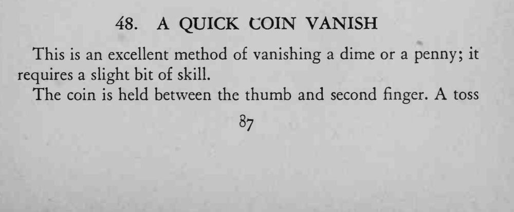
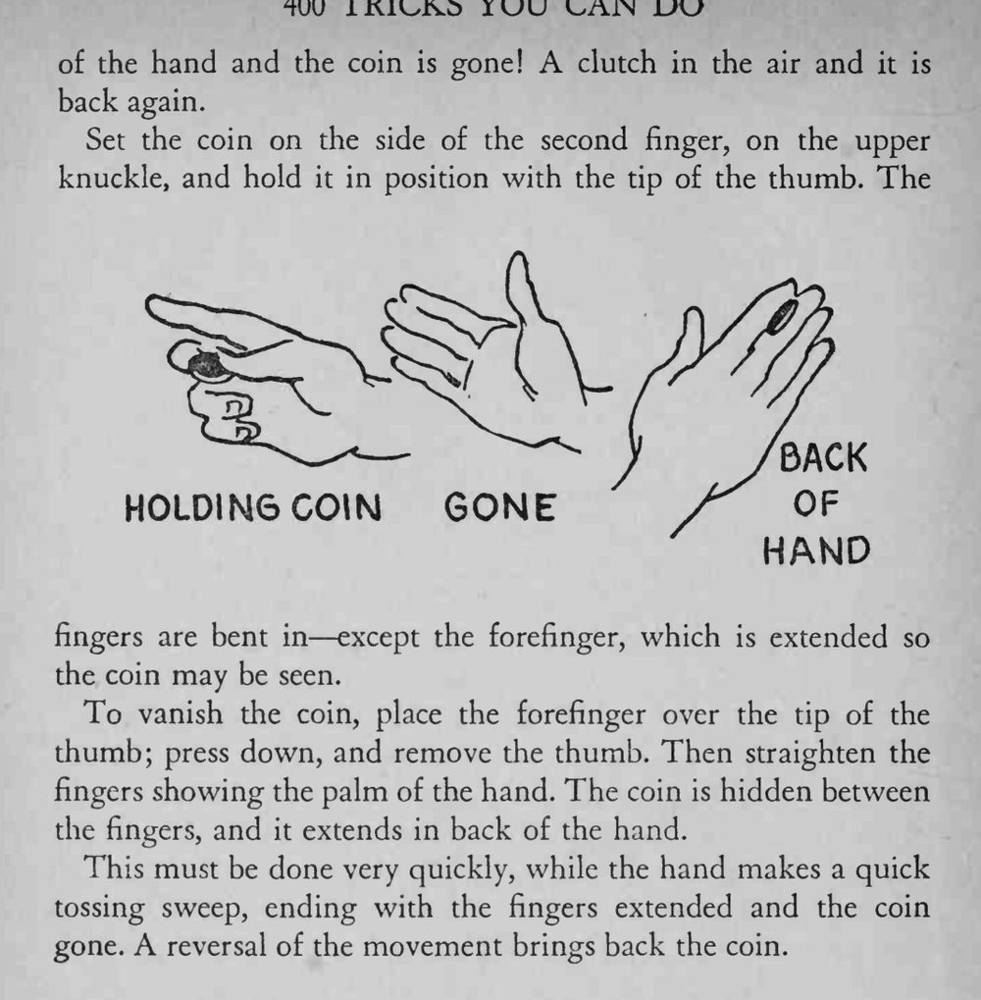

硬币夹在拇指与中指之间，手一抛硬币就消失了；空中一抓，它又回到手中。
整套动作要在手快速抛挥的同时完成，结束时手指伸直、硬币已不见。


This is an excellent method of vanishing a dime or a penny; it requires a slight bit of skill. The coin is held between the thumb and second finger. A toss of the hand and the coin is gone! A clutch in the air and it is back again. Set the coin on the side of the second finger, on the upper knuckle, and hold it in position with the tip of the thumb. The fingers are bent in except the forefinger, which is extended so the coin may be seen. To vanish the coin, place the forefinger over the tip of the thumb; press down, and remove the thumb. Then straighten the fingers showing the palm of the hand. The coin is hidden between the fingers, and it extends in back of the hand. This must be done very quickly, while the hand makes a quick tossing sweep, ending with the fingers extended and the coin gone. A reversal of the movement brings back the coin.